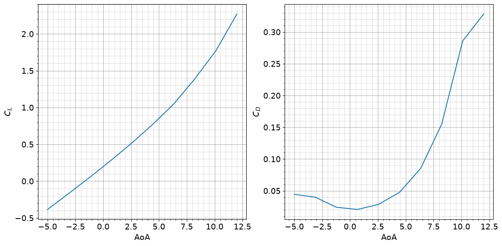

Tutorial 23 - Aircraft Aerodynamic Analysis#
Welcome to this tutorial on performing aerodynamic analysis of a turbofan aircraft using RCAIDE. This guide will walk you through the code, explain its components, and highlight where modifications can be made to customize the simulation for different vehicle designs.
1. Header and Imports#
The Imports section is divided into two parts: general-purpose Python libraries and simulation-specific libraries.
[1]:
import matplotlib.cm as cm
import numpy as np
from copy import deepcopy
import matplotlib.pyplot as plt
import os
2. RCAIDE Imports#
The RCAIDE Imports section includes the core modules needed for the simulation. These libraries provide specialized classes and tools for building, analyzing, and running aircraft models.
Key Imports:#
RCAIDE: The core package is imported directly. This approach allows us to access specific classes and methods from RCAIDE without repeatedly importing individual components at the top of the script.
``Units`` Module: The Units module is a standardized way to handle unit conversions within RCAIDE. It ensures consistent units across all inputs and outputs, reducing the likelihood of conversion errors.
[2]:
import RCAIDE
from RCAIDE.Framework.Core import Units , Data
from RCAIDE.Library.Methods.Powertrain.Propulsors.Turbofan import design_turbofan
from RCAIDE.Library.Methods.Performance import aircraft_aerodynamic_analysis
from RCAIDE.Library.Methods.Geometry.Planform import wing_planform
from RCAIDE.Library.Plots import *
Vehicle Setup#
The ``vehicle_setup`` function defines the baseline configuration of the aircraft. This section builds the vehicle step-by-step by specifying its components, geometric properties, and high-level parameters.
A detailed description of the vehicle setup is provided in the Tutorial 1.
[3]:
def vehicle_setup():
# ------------------------------------------------------------------
# Initialize the Vehicle
# ------------------------------------------------------------------
vehicle = RCAIDE.Vehicle()
vehicle.tag = 'Boeing_737-800'
# ################################################# Vehicle-level Properties #################################################
vehicle.mass_properties.max_takeoff = 79015.8 * Units.kilogram
vehicle.mass_properties.takeoff = 79015.8 * Units.kilogram
vehicle.mass_properties.operating_empty = 62746.4 * Units.kilogram
vehicle.mass_properties.max_zero_fuel = 62732.0 * Units.kilogram
vehicle.mass_properties.cargo = 10000. * Units.kilogram
vehicle.mass_properties.center_of_gravity = [[21,0, 0, 0]]
vehicle.flight_envelope.ultimate_load = 3.75
vehicle.flight_envelope.positive_limit_load = 2.5
vehicle.flight_envelope.design_mach_number = 0.78
vehicle.flight_envelope.design_cruise_altitude = 35000*Units.feet
vehicle.flight_envelope.design_range = 3500 * Units.nmi
vehicle.reference_area = 124.862 * Units['meters**2']
vehicle.passengers = 170
vehicle.systems.control = "fully powered"
vehicle.systems.accessories = "medium range"
# ################################################# Landing Gear #############################################################
# ------------------------------------------------------------------
# Landing Gear
# ------------------------------------------------------------------
main_gear = RCAIDE.Library.Components.Landing_Gear.Main_Landing_Gear()
main_gear.tire_diameter = 1.12000 * Units.m
main_gear.strut_length = 1.8 * Units.m
main_gear.units = 2 # Number of main landing gear
main_gear.wheels = 2 # Number of wheels on the main landing gear
vehicle.append_component(main_gear)
nose_gear = RCAIDE.Library.Components.Landing_Gear.Nose_Landing_Gear()
nose_gear.tire_diameter = 0.6858 * Units.m
nose_gear.units = 1 # Number of nose landing gear
nose_gear.wheels = 2 # Number of wheels on the nose landing gear
nose_gear.strut_length = 1.3 * Units.m
vehicle.append_component(nose_gear)
# ################################################# Wings #####################################################################
# ------------------------------------------------------------------
# Main Wing
# ------------------------------------------------------------------
wing = RCAIDE.Library.Components.Wings.Main_Wing()
wing.tag = 'main_wing'
wing.aspect_ratio = 10.18
wing.sweeps.quarter_chord = 25 * Units.deg
wing.thickness_to_chord = 0.1
wing.taper = 0.1
wing.spans.projected = 34.32
wing.chords.root = 7.760 * Units.meter
wing.chords.tip = 0.782 * Units.meter
wing.chords.mean_aerodynamic = 4.235 * Units.meter
wing.areas.reference = 124.862
wing.areas.wetted = 225.08
wing.twists.root = 4.0 * Units.degrees
wing.twists.tip = 0.0 * Units.degrees
wing.origin = [[13.61,0,-0.5]]
wing.aerodynamic_center = [0,0,0]
wing.vertical = False
wing.symmetric = True
wing.high_lift = True
wing.dynamic_pressure_ratio = 1.0
# Wing Segments
root_airfoil = RCAIDE.Library.Components.Airfoils.Airfoil()
ospath = os.path.abspath(os.path.join('Notebook'))
separator = os.path.sep
rel_path = os.path.dirname(ospath) + separator + '..' + separator + '..' + separator + 'VnV' + separator + 'Vehicles' + separator
root_airfoil.coordinate_file = rel_path + 'Airfoils' + separator + 'transonic_wing_root_section_airfoil.txt'
segment = RCAIDE.Library.Components.Wings.Segments.Segment()
segment.tag = 'Root'
segment.percent_span_location = 0.0
segment.twist = 4. * Units.deg
segment.root_chord_percent = 1.
segment.thickness_to_chord = 0.1
segment.dihedral_outboard = 2.5 * Units.degrees
segment.sweeps.quarter_chord = 28.225 * Units.degrees
segment.thickness_to_chord = .1
segment.append_airfoil(root_airfoil)
wing.append_segment(segment)
yehudi_airfoil = RCAIDE.Library.Components.Airfoils.Airfoil()
yehudi_airfoil.coordinate_file = rel_path+ 'Airfoils' + separator + 'transonic_wing_inboard_section_airfoil.txt'
segment = RCAIDE.Library.Components.Wings.Segments.Segment()
segment.tag = 'Yehudi'
segment.percent_span_location = 0.324
segment.twist = 0.047193 * Units.deg
segment.root_chord_percent = 0.5
segment.thickness_to_chord = 0.1
segment.dihedral_outboard = 5.5 * Units.degrees
segment.sweeps.quarter_chord = 25. * Units.degrees
segment.thickness_to_chord = .1
segment.append_airfoil(yehudi_airfoil)
wing.append_segment(segment)
mid_airfoil = RCAIDE.Library.Components.Airfoils.Airfoil()
mid_airfoil.coordinate_file = rel_path + 'Airfoils' + separator + 'transonic_wing_outboard_section_airfoil.txt'
segment = RCAIDE.Library.Components.Wings.Segments.Segment()
segment.tag = 'Section_2'
segment.percent_span_location = 0.963
segment.twist = 0.00258 * Units.deg
segment.root_chord_percent = 0.220
segment.thickness_to_chord = 0.1
segment.dihedral_outboard = 5.5 * Units.degrees
segment.sweeps.quarter_chord = 56.75 * Units.degrees
segment.thickness_to_chord = .1
segment.append_airfoil(mid_airfoil)
wing.append_segment(segment)
tip_airfoil = RCAIDE.Library.Components.Airfoils.Airfoil()
tip_airfoil.coordinate_file = rel_path + 'Airfoils' + separator + 'transonic_wing_tip_section_airfoil.txt'
segment = RCAIDE.Library.Components.Wings.Segments.Segment()
segment.tag = 'Tip'
segment.percent_span_location = 1.
segment.twist = 0. * Units.degrees
segment.root_chord_percent = 0.10077
segment.thickness_to_chord = 0.1
segment.dihedral_outboard = 0.
segment.sweeps.quarter_chord = 0.
segment.thickness_to_chord = .1
segment.append_airfoil(tip_airfoil)
wing.append_segment(segment)
# control surfaces -------------------------------------------
slat = RCAIDE.Library.Components.Wings.Control_Surfaces.Slat()
slat.tag = 'slat'
slat.span_fraction_start = 0.2
slat.span_fraction_end = 0.963
slat.deflection = 0.0 * Units.degrees
slat.chord_fraction = 0.075
wing.append_control_surface(slat)
flap = RCAIDE.Library.Components.Wings.Control_Surfaces.Flap()
flap.tag = 'flap'
flap.span_fraction_start = 0.2
flap.span_fraction_end = 0.7
flap.deflection = 0.0 * Units.degrees
flap.configuration_type = 'double_slotted'
flap.chord_fraction = 0.30
wing.append_control_surface(flap)
aileron = RCAIDE.Library.Components.Wings.Control_Surfaces.Aileron()
aileron.tag = 'aileron'
aileron.span_fraction_start = 0.7
aileron.span_fraction_end = 0.963
aileron.deflection = 0.0 * Units.degrees
aileron.chord_fraction = 0.16
wing.append_control_surface(aileron)
# add to vehicle
vehicle.append_component(wing)
# ------------------------------------------------------------------
# Horizontal Stabilizer
# ------------------------------------------------------------------
wing = RCAIDE.Library.Components.Wings.Horizontal_Tail()
wing.tag = 'horizontal_stabilizer'
wing.aspect_ratio = 4.99
wing.sweeps.quarter_chord = 28.2250 * Units.deg
wing.thickness_to_chord = 0.08
wing.taper = 0.3333
wing.spans.projected = 14.4
wing.chords.root = 4.2731
wing.chords.tip = 1.4243
wing.chords.mean_aerodynamic = 8.0
wing.areas.reference = 41.49
wing.areas.exposed = 59.354 # Exposed area of the horizontal tail
wing.areas.wetted = 71.81 # Wetted area of the horizontal tail
wing.twists.root = 3.0 * Units.degrees
wing.twists.tip = 3.0 * Units.degrees
wing.origin = [[33.02,0,1.466]]
wing.aerodynamic_center = [0,0,0]
wing.vertical = False
wing.symmetric = True
wing.dynamic_pressure_ratio = 0.9
# Wing Segments
segment = RCAIDE.Library.Components.Wings.Segments.Segment()
segment.tag = 'root_segment'
segment.percent_span_location = 0.0
segment.twist = 0. * Units.deg
segment.root_chord_percent = 1.0
segment.dihedral_outboard = 8.63 * Units.degrees
segment.sweeps.quarter_chord = 28.2250 * Units.degrees
segment.thickness_to_chord = .1
wing.append_segment(segment)
segment = RCAIDE.Library.Components.Wings.Segments.Segment()
segment.tag = 'tip_segment'
segment.percent_span_location = 1.
segment.twist = 0. * Units.deg
segment.root_chord_percent = 0.3333
segment.dihedral_outboard = 0 * Units.degrees
segment.sweeps.quarter_chord = 0 * Units.degrees
segment.thickness_to_chord = .1
wing.append_segment(segment)
# control surfaces -------------------------------------------
elevator = RCAIDE.Library.Components.Wings.Control_Surfaces.Elevator()
elevator.tag = 'elevator'
elevator.span_fraction_start = 0.09
elevator.span_fraction_end = 0.92
elevator.deflection = 0.0 * Units.deg
elevator.chord_fraction = 0.3
wing.append_control_surface(elevator)
# add to vehicle
vehicle.append_component(wing)
# ------------------------------------------------------------------
# Vertical Stabilizer
# ------------------------------------------------------------------
wing = RCAIDE.Library.Components.Wings.Vertical_Tail()
wing.tag = 'vertical_stabilizer'
wing.aspect_ratio = 1.98865
wing.sweeps.quarter_chord = 31.2 * Units.deg
wing.thickness_to_chord = 0.08
wing.taper = 0.1183
wing.spans.projected = 8.33
wing.total_length = wing.spans.projected
wing.chords.root = 10.1
wing.chords.tip = 1.20
wing.chords.mean_aerodynamic = 4.0
wing.areas.reference = 34.89
wing.areas.wetted = 57.25
wing.twists.root = 0.0 * Units.degrees
wing.twists.tip = 0.0 * Units.degrees
wing.origin = [[26.944,0,1.54]]
wing.aerodynamic_center = [0,0,0]
wing.vertical = True
wing.symmetric = False
wing.t_tail = False
wing.dynamic_pressure_ratio = 1.0
# Wing Segments
segment = RCAIDE.Library.Components.Wings.Segments.Segment()
segment.tag = 'root'
segment.percent_span_location = 0.0
segment.twist = 0. * Units.deg
segment.root_chord_percent = 1.
segment.dihedral_outboard = 0 * Units.degrees
segment.sweeps.quarter_chord = 61.485 * Units.degrees
segment.thickness_to_chord = .1
wing.append_segment(segment)
segment = RCAIDE.Library.Components.Wings.Segments.Segment()
segment.tag = 'segment_1'
segment.percent_span_location = 0.2962
segment.twist = 0. * Units.deg
segment.root_chord_percent = 0.45
segment.dihedral_outboard = 0. * Units.degrees
segment.sweeps.quarter_chord = 31.2 * Units.degrees
segment.thickness_to_chord = .1
wing.append_segment(segment)
segment = RCAIDE.Library.Components.Wings.Segments.Segment()
segment.tag = 'segment_2'
segment.percent_span_location = 1.0
segment.twist = 0. * Units.deg
segment.root_chord_percent = 0.1183
segment.dihedral_outboard = 0.0 * Units.degrees
segment.sweeps.quarter_chord = 0.0
segment.thickness_to_chord = .1
wing.append_segment(segment)
# add to vehicle
vehicle.append_component(wing)
# ################################################# Fuselage ################################################################
fuselage = RCAIDE.Library.Components.Fuselages.Fuselage()
fuselage.number_coach_seats = vehicle.passengers
fuselage.seats_abreast = 6
fuselage.seat_pitch = 1 * Units.meter
fuselage.fineness.nose = 1.6
fuselage.fineness.tail = 2.
fuselage.lengths.nose = 6.4 * Units.meter
fuselage.lengths.tail = 8.0 * Units.meter
fuselage.lengths.total = 38.02 * Units.meter
fuselage.lengths.fore_space = 6. * Units.meter
fuselage.lengths.aft_space = 5. * Units.meter
fuselage.width = 3.74 * Units.meter
fuselage.heights.maximum = 3.74 * Units.meter
fuselage.effective_diameter = 3.74 * Units.meter
fuselage.areas.side_projected = 142.1948 * Units['meters**2']
fuselage.areas.wetted = 446.718 * Units['meters**2']
fuselage.areas.front_projected = 12.57 * Units['meters**2']
fuselage.differential_pressure = 5.0e4 * Units.pascal
fuselage.heights.at_quarter_length = 3.74 * Units.meter
fuselage.heights.at_three_quarters_length = 3.65 * Units.meter
fuselage.heights.at_wing_root_quarter_chord = 3.74 * Units.meter
# Segment
segment = RCAIDE.Library.Components.Fuselages.Segments.Segment()
segment.tag = 'segment_0'
segment.percent_x_location = 0.0000
segment.percent_z_location = -0.00144
segment.height = 0.0100
segment.width = 0.0100
fuselage.segments.append(segment)
# Segment
segment = RCAIDE.Library.Components.Fuselages.Segments.Segment()
segment.tag = 'segment_1'
segment.percent_x_location = 0.00576
segment.percent_z_location = -0.00144
segment.height = 0.7500
segment.width = 0.6500
fuselage.segments.append(segment)
# Segment
segment = RCAIDE.Library.Components.Fuselages.Segments.Segment()
segment.tag = 'segment_2'
segment.percent_x_location = 0.02017
segment.percent_z_location = 0.00000
segment.height = 1.52783
segment.width = 1.20043
fuselage.segments.append(segment)
# Segment
segment = RCAIDE.Library.Components.Fuselages.Segments.Segment()
segment.tag = 'segment_3'
segment.percent_x_location = 0.03170
segment.percent_z_location = 0.00000
segment.height = 1.96435
segment.width = 1.52783
fuselage.segments.append(segment)
# Segment
segment = RCAIDE.Library.Components.Fuselages.Segments.Segment()
segment.tag = 'segment_4'
segment.percent_x_location = 0.04899
segment.percent_z_location = 0.00431
segment.height = 2.72826
segment.width = 1.96435
fuselage.segments.append(segment)
# Segment
segment = RCAIDE.Library.Components.Fuselages.Segments.Segment()
segment.tag = 'segment_5'
segment.percent_x_location = 0.07781
segment.percent_z_location = 0.00861
segment.height = 3.49217
segment.width = 2.61913
fuselage.segments.append(segment)
# Segment
segment = RCAIDE.Library.Components.Fuselages.Segments.Segment()
segment.tag = 'segment_6'
segment.percent_x_location = 0.10375
segment.percent_z_location = 0.01005
segment.height = 3.70130
segment.width = 3.05565
fuselage.segments.append(segment)
# Segment
segment = RCAIDE.Library.Components.Fuselages.Segments.Segment()
segment.tag = 'segment_7'
segment.percent_x_location = 0.16427
segment.percent_z_location = 0.01148
segment.height = 3.92870
segment.width = 3.71043
fuselage.segments.append(segment)
# Segment
segment = RCAIDE.Library.Components.Fuselages.Segments.Segment()
segment.tag = 'segment_8'
segment.percent_x_location = 0.22478
segment.percent_z_location = 0.01148
segment.height = 3.92870
segment.width = 3.92870
fuselage.segments.append(segment)
# Segment
segment = RCAIDE.Library.Components.Fuselages.Segments.Segment()
segment.tag = 'segment_9'
segment.percent_x_location = 0.69164
segment.percent_z_location = 0.01292
segment.height = 3.81957
segment.width = 3.81957
fuselage.segments.append(segment)
# Segment
segment = RCAIDE.Library.Components.Fuselages.Segments.Segment()
segment.tag = 'segment_10'
segment.percent_x_location = 0.71758
segment.percent_z_location = 0.01292
segment.height = 3.81957
segment.width = 3.81957
fuselage.segments.append(segment)
# Segment
segment = RCAIDE.Library.Components.Fuselages.Segments.Segment()
segment.tag = 'segment_11'
segment.percent_x_location = 0.78098
segment.percent_z_location = 0.01722
segment.height = 3.49217
segment.width = 3.71043
fuselage.segments.append(segment)
# Segment
segment = RCAIDE.Library.Components.Fuselages.Segments.Segment()
segment.tag = 'segment_12'
segment.percent_x_location = 0.85303
segment.percent_z_location = 0.02296
segment.height = 3.05565
segment.width = 3.16478
fuselage.segments.append(segment)
# Segment
segment = RCAIDE.Library.Components.Fuselages.Segments.Segment()
segment.tag = 'segment_13'
segment.percent_x_location = 0.91931
segment.percent_z_location = 0.03157
segment.height = 2.40087
segment.width = 1.96435
fuselage.segments.append(segment)
# Segment
segment = RCAIDE.Library.Components.Fuselages.Segments.Segment()
segment.tag = 'segment_14'
segment.percent_x_location = 1.00
segment.percent_z_location = 0.04593
segment.height = 1.09130
segment.width = 0.21826
fuselage.segments.append(segment)
# add to vehicle
vehicle.append_component(fuselage)
# ################################################# Energy Network #######################################################
#-------------------------------------------------------------------------------------------------------------------------
# Turbofan Network
#-------------------------------------------------------------------------------------------------------------------------
net = RCAIDE.Framework.Networks.Fuel()
#-------------------------------------------------------------------------------------------------------------------------
# Fuel Distrubition Line
#-------------------------------------------------------------------------------------------------------------------------
fuel_line = RCAIDE.Library.Components.Powertrain.Distributors.Fuel_Line()
#------------------------------------------------------------------------------------------------------------------------------------
# Propulsor: Starboard Propulsor
#------------------------------------------------------------------------------------------------------------------------------------
turbofan = RCAIDE.Library.Components.Powertrain.Propulsors.Turbofan()
turbofan.tag = 'starboard_propulsor'
turbofan.origin = [[13.72, 4.86,-1.1]]
turbofan.length = 2.71
turbofan.bypass_ratio = 5.4
turbofan.design_altitude = 35000.0*Units.ft
turbofan.design_mach_number = 0.78
turbofan.design_thrust = 35000.0* Units.N
# fan
fan = RCAIDE.Library.Components.Powertrain.Converters.Fan()
fan.tag = 'fan'
fan.polytropic_efficiency = 0.93
fan.pressure_ratio = 1.7
turbofan.fan = fan
# working fluid
turbofan.working_fluid = RCAIDE.Library.Attributes.Gases.Air()
ram = RCAIDE.Library.Components.Powertrain.Converters.Ram()
ram.tag = 'ram'
turbofan.ram = ram
# inlet nozzle
inlet_nozzle = RCAIDE.Library.Components.Powertrain.Converters.Compression_Nozzle()
inlet_nozzle.tag = 'inlet nozzle'
inlet_nozzle.polytropic_efficiency = 0.98
inlet_nozzle.pressure_ratio = 0.98
turbofan.inlet_nozzle = inlet_nozzle
# low pressure compressor
low_pressure_compressor = RCAIDE.Library.Components.Powertrain.Converters.Compressor()
low_pressure_compressor.tag = 'lpc'
low_pressure_compressor.polytropic_efficiency = 0.91
low_pressure_compressor.pressure_ratio = 1.9
turbofan.low_pressure_compressor = low_pressure_compressor
# high pressure compressor
high_pressure_compressor = RCAIDE.Library.Components.Powertrain.Converters.Compressor()
high_pressure_compressor.tag = 'hpc'
high_pressure_compressor.polytropic_efficiency = 0.91
high_pressure_compressor.pressure_ratio = 10.0
turbofan.high_pressure_compressor = high_pressure_compressor
# low pressure turbine
low_pressure_turbine = RCAIDE.Library.Components.Powertrain.Converters.Turbine()
low_pressure_turbine.tag ='lpt'
low_pressure_turbine.mechanical_efficiency = 0.99
low_pressure_turbine.polytropic_efficiency = 0.93
turbofan.low_pressure_turbine = low_pressure_turbine
# high pressure turbine
high_pressure_turbine = RCAIDE.Library.Components.Powertrain.Converters.Turbine()
high_pressure_turbine.tag ='hpt'
high_pressure_turbine.mechanical_efficiency = 0.99
high_pressure_turbine.polytropic_efficiency = 0.93
turbofan.high_pressure_turbine = high_pressure_turbine
# combustor
combustor = RCAIDE.Library.Components.Powertrain.Converters.Combustor()
combustor.tag = 'Comb'
combustor.efficiency = 0.99
combustor.alphac = 1.0
combustor.turbine_inlet_temperature = 1500
combustor.pressure_ratio = 0.95
combustor.fuel_data = RCAIDE.Library.Attributes.Propellants.Jet_A1()
turbofan.combustor = combustor
# core nozzle
core_nozzle = RCAIDE.Library.Components.Powertrain.Converters.Expansion_Nozzle()
core_nozzle.tag = 'core nozzle'
core_nozzle.polytropic_efficiency = 0.95
core_nozzle.pressure_ratio = 0.99
turbofan.core_nozzle = core_nozzle
# fan nozzle
fan_nozzle = RCAIDE.Library.Components.Powertrain.Converters.Expansion_Nozzle()
fan_nozzle.tag = 'fan nozzle'
fan_nozzle.polytropic_efficiency = 0.95
fan_nozzle.pressure_ratio = 0.99
turbofan.fan_nozzle = fan_nozzle
# design turbofan
design_turbofan(turbofan)
# append propulsor to distribution line
# Nacelle
nacelle = RCAIDE.Library.Components.Nacelles.Body_of_Revolution_Nacelle()
nacelle.diameter = 2.05
nacelle.length = 2.71
nacelle.tag = 'nacelle_1'
nacelle.inlet_diameter = 2.0
nacelle.origin = [[13.5,4.38,-1.5]]
nacelle.areas.wetted = 1.1*np.pi*nacelle.diameter*nacelle.length
nacelle_airfoil = RCAIDE.Library.Components.Airfoils.NACA_4_Series_Airfoil()
nacelle_airfoil.NACA_4_Series_code = '2410'
nacelle.append_airfoil(nacelle_airfoil)
turbofan.nacelle = nacelle
# append propulsor to network
net.propulsors.append(turbofan)
#------------------------------------------------------------------------------------------------------------------------------------
# Propulsor: Port Propulsor
#------------------------------------------------------------------------------------------------------------------------------------
# copy turbofan
turbofan_2 = deepcopy(turbofan)
turbofan_2.tag = 'port_propulsor'
turbofan_2.origin = [[13.72,-4.38,-1.1]] # change origin
turbofan_2.nacelle.origin = [[13.5,-4.38,-1.5]]
# append propulsor to network
net.propulsors.append(turbofan_2)
#-------------------------------------------------------------------------------------------------------------------------
# Energy Source: Fuel Tank
#-------------------------------------------------------------------------------------------------------------------------
# fuel tank
fuel_tank = RCAIDE.Library.Components.Powertrain.Sources.Fuel_Tanks.Fuel_Tank()
fuel_tank.origin = vehicle.wings.main_wing.origin
fuel_tank.fuel = RCAIDE.Library.Attributes.Propellants.Jet_A1()
fuel_tank.fuel.mass_properties.mass = vehicle.mass_properties.max_takeoff - vehicle.mass_properties.max_zero_fuel
fuel_tank.fuel.origin = vehicle.wings.main_wing.mass_properties.center_of_gravity
fuel_tank.fuel.mass_properties.center_of_gravity = vehicle.wings.main_wing.aerodynamic_center
fuel_tank.volume = fuel_tank.fuel.mass_properties.mass/fuel_tank.fuel.density
fuel_line.fuel_tanks.append(fuel_tank)
#------------------------------------------------------------------------------------------------------------------------------------
# Assign propulsors to fuel line to network
fuel_line.assigned_propulsors = [[turbofan.tag, turbofan_2.tag]]
#------------------------------------------------------------------------------------------------------------------------------------
# Append fuel line to fuel line to network
net.fuel_lines.append(fuel_line)
# Append energy network to aircraft
vehicle.append_energy_network(net)
#-------------------------------------------------------------------------------------------------------------------------
# Done !
#-------------------------------------------------------------------------------------------------------------------------
return vehicle
Aerodynamic Analysis#
With the vehicle setup complete, we can now perform the aerodynamic analysis. This involves evaluating the aerodynamic performance of the aircraft over a range of Mach numbers and angles of attack.
Steps for Analysis#
Define Input Parameters:
Specify a range of Mach numbers and angles of attack (
AoA) for the analysis.
Run the Aerodynamic Analysis:
Use the
aircraft_aerodynamic_analysisfunction to calculate key aerodynamic parameter, such as:Lift Coefficient (
C_L)
Perform the analysis for all combinations of Mach numbers and angles of attack.
Organize Results:
Store the computed aerodynamic data in a structured format, such as a dictionary or DataFrame, for easier visualization and interpretation.
Visualize Results:
Use the
plot_aircraft_aerodynamicsfunction to generate plots of the aerodynamic parameters across the defined ranges.
[4]:
vehicle = vehicle_setup()
for wing in vehicle.wings:
wing_planform(wing) #,overwrite_reference = True)
if isinstance(wing, RCAIDE.Library.Components.Wings.Main_Wing):
vehicle.reference_area = wing.areas.reference
Mach_number_range = np.atleast_2d(np.linspace(0.1, 0.9, 10)).T
angle_of_attack_range = np.atleast_2d(np.linspace(-5, 12, 10)).T*Units.degrees
control_surface_deflection_range = np.atleast_2d(np.linspace(0,30,7)).T*Units.degrees
# Define Analysis and append on tests (geometry and aerodynamics)
aerodynamics_analysis_routine = RCAIDE.Framework.Analyses.Vehicle()
aerodynamics_analysis_routine.vehicle = vehicle
geometry = RCAIDE.Framework.Analyses.Geometry.Geometry()
aerodynamics_analysis_routine.append(geometry)
aerodynamics = RCAIDE.Framework.Analyses.Aerodynamics.Vortex_Lattice_Method()
aerodynamics_analysis_routine.append(aerodynamics)
results = aircraft_aerodynamic_analysis(analyses = aerodynamics_analysis_routine,
angle_of_attacks = angle_of_attack_range,
mach_numbers = Mach_number_range,
altitude = 10000 * Units.feet)
plot_aircraft_aerodynamics(results)
Creating aerodynamic surrogate ...
